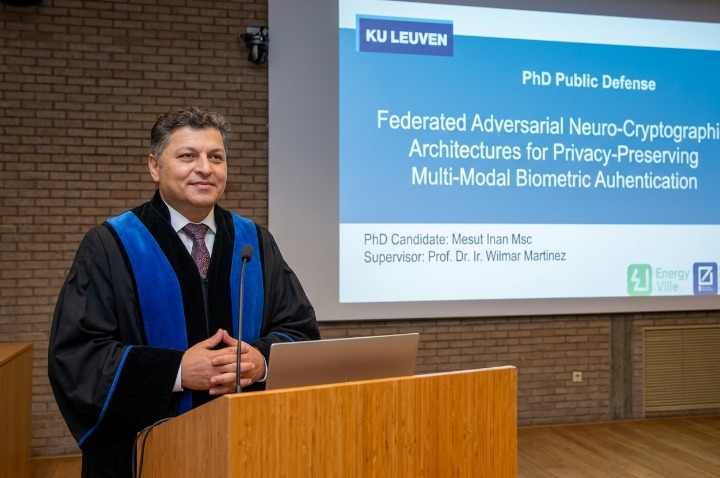
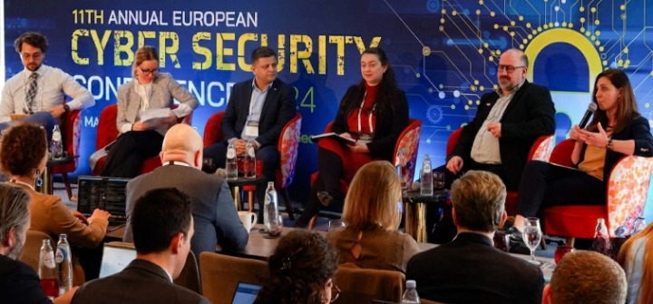
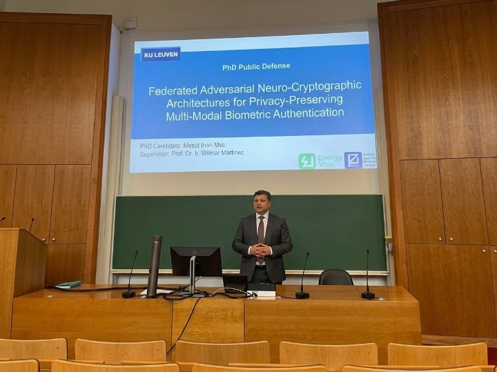

Cybersecurity / AI
AEGIS-SENTINEL
Civilian airspace threat detection and critical infrastructure protection using sensor fusion, intelligent threat assessment and human-authorised decision making.
Academic and professional work across Cyber Security, Artificial Intelligence, Information Security, emerging technologies and responsible technology adoption.

Dr Mesut İnan, also written as Dr Mesut Inan, is a Cyber Security and Artificial Intelligence academic and researcher with a background in Computer Science, Information Security, AI and emerging security technologies. His work focuses on connecting rigorous academic research with practical cybersecurity and intelligent-system applications.
Security engineering, threat analysis, secure systems and practical cybersecurity education.
AI systems, intelligent architectures and responsible adoption of emerging technologies.
Research-led teaching across Cyber Security, AI, Computer Science and Information Security.
Academic background in Computer Science, Artificial Intelligence, Cybersecurity and Information Security.
Specialisation: Cybersecurity and Neural Cryptography
Autonomous Systems | Summa Cum Laude
Risk and Information Security | Distinction
Computer Science | Top Student
Selected photographs of Dr Mesut İnan from academic, professional, research and educational activities.
.png)




Teaching and academic responsibilities across Cyber Security, Artificial Intelligence and Computer Science.
Academic work in AI and Cybersecurity across undergraduate and postgraduate contexts.
Academic and teaching experience in Applied Computer Science.
Long-term work across technology, innovation and applied systems.
Current research interests and areas of academic development.
Selected research, cybersecurity and emerging technology projects.
Civilian airspace threat detection and critical infrastructure protection using sensor fusion, intelligent threat assessment and human-authorised decision making.
Research into secure and adaptive systems, optimisation and computational modelling with a security-oriented design perspective.
A modular web security assessment framework for evidence collection, security analysis, risk analysis and automated reporting.
Investigation of practical and responsible applications of AI, cybersecurity and emerging digital technologies.
Selected research outputs and academic contributions.
Research output and project record available through Zenodo.
DOI: 10.5281/zenodo.17974640Additional peer-reviewed publications, conference contributions and academic outputs will be added here.
Research-led teaching and academic supervision across core computing and security disciplines.
Cybersecurity principles, secure systems, threat analysis and practical security engineering.
AI concepts, intelligent systems, applied AI and responsible AI adoption.
Computer science foundations, software and systems development.
Risk, information assurance, security governance and protection of digital assets.
For academic, research and professional enquiries.